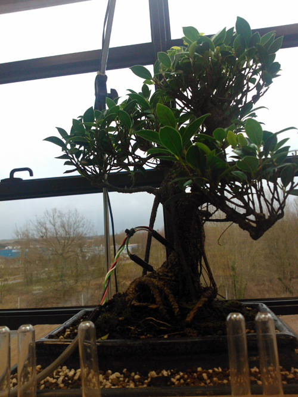

Pièce sonore pour montée de sève, Nicolas Bralet, 2014
Oeuvre sonore sur le rythme biologique d'une plante présentée pendant la 11ème édition de La Semaine du Son se déroulera du lundi 27 janvier au dimanche 9 février2014 dans toute la France, ainsi qu’à Bruxelles et Genève.
Programme complet (pdf)
La 11ème édition de La Semaine du Son est organisée partout en France ainsi qu’à Bruxelles, Genève sous le patronage du Ministre de l'éducation nationale, de la Ministre des affaires sociales et de la santé, du Ministre de l'écologie, du développement durable et de l'énergie, de la Ministre de la culture et de la communication et de la Ministre de l'enseignement supérieur et de la recherche
Pièce sonore pour montée de sève, Nicolas Bralet, 2014